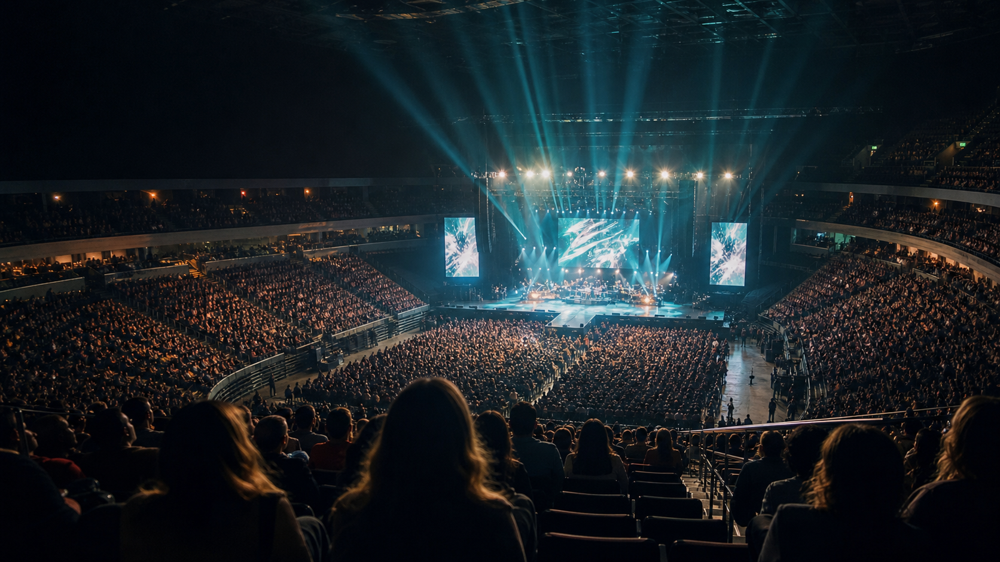

演唱会座区决策助手
买票前，先看见。
找到场馆，查看座区视角，让 AI 帮你选座。
搜索结果
Cities
热门城市
选一个城市，马上查看场馆。
Venue Search
热门场馆
从熟悉的场馆，开始你的观演计划。
20热门场馆
0座位图
0座区
0已发布视角
Recent
最近更新
后台新增或修改视角记录后，会在这里形成最新内容入口。
Why SeatView
不是看图，而是帮你做座区决策
SeatView 将公开来源整理为“场馆 - 座区 - 视角 - 标签”的结构化数据。图片用于参考，标签和评价帮助用户更快判断距离、遮挡、屏幕和拍摄体验。
Venue Detail
场馆详情
选择一个场馆后查看座位图和视角记录。
当前为产品 Demo，部分场馆数据为示例数据。座区按钮用于切换记录，不代表精确地图坐标。
座位图
100%
选择座区
AI 座区助手
告诉我，你想怎么看？
查看推荐结果 ↓
座区详情
暂无座区数据
后台录入视角记录后，这里会展示座区、排数、评价、标签和来源链接。
暂无
标签概览
Your picks